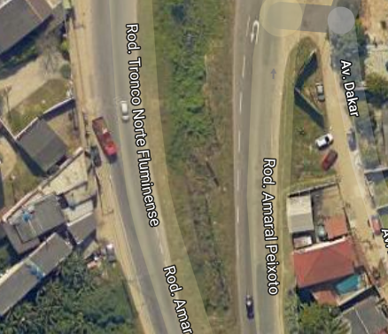
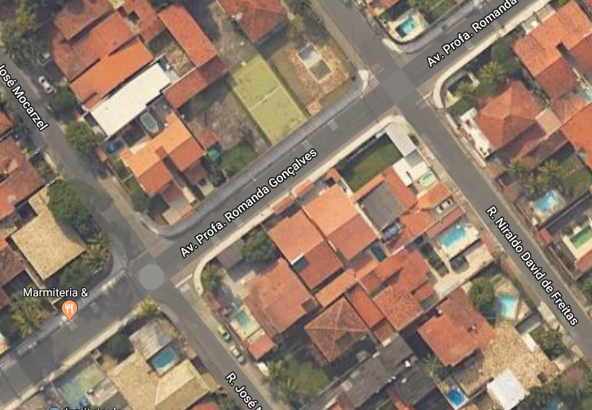

Paulo Rafael da Silva Alcântara : 0050013842
Caso 1 - Sem acostamento, calçada para trânsito dos pedestres além da falta de uma passarela para pedestres.
Em caso de pane em um veículo a via não disponibiliza acostamento, calçada inexistente obrigando ao pedestre circularem entre os carros e caso um pedestre deseje fazer atrevessia a passarela mais próxima se a encontra a 0,5km

Caso 2 - Falta de sinalização e semáforos
A avenida Professora Romanda Gonçalves paralela a Avenida Central na região oceânica, afim de desefogar o trânsito da avenida central a rua foi recentemente asfaltada porém não existe nenhum tipo de sinalização e não possui nenhum semáforo logo os aciedentes são constantes.
